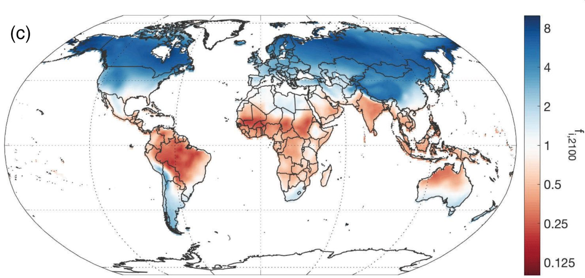
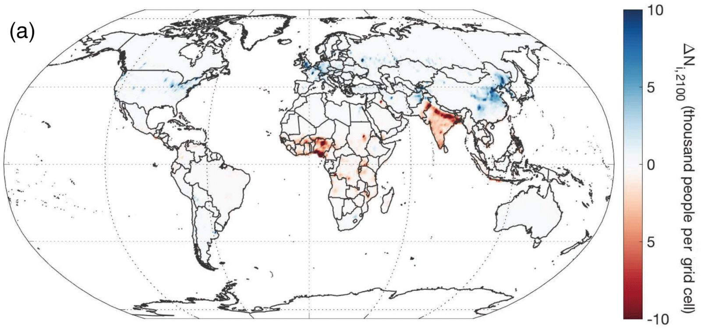
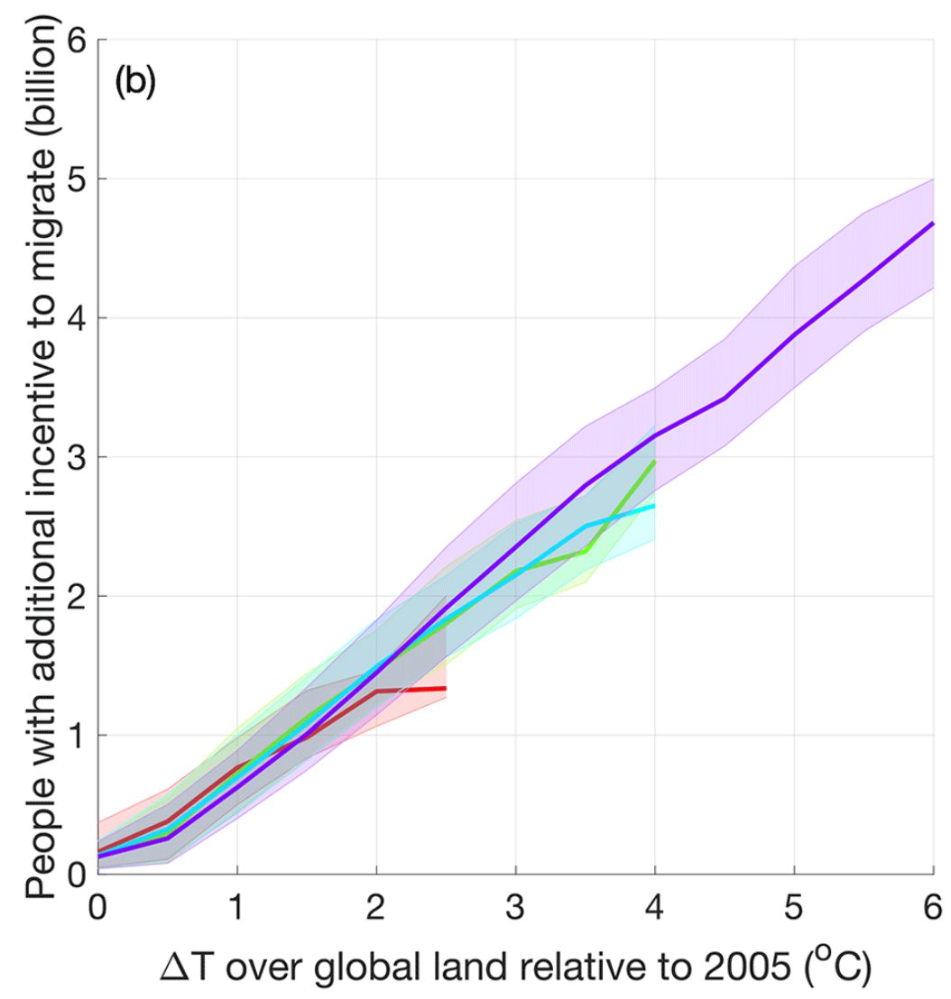

We (i.e., Min Chen and I) are physical scientists with no pretense to in-depth understanding of social and political dynamics. Yet we recently published a paper titled “Climate change as an incentive to future human migration”.
Discussing climate and population can be controversial. There is a long history of racist, classist, xenophobic writing on this topic.
And the sad history of physical scientists making blundering remarks about human beings provides plenty of motivation for amateurs to avoid commenting on anything related to projections of future human migration. Nevertheless, …
Physicists often make very simple quantitative models leaving out many factors to try to get some first-order understanding. For environmental scientists, this framing perhaps reached its apogee with John Harte’s book, “Consider a Spherical Cow”.
Social scientists (with the exception of some economists!), aware as they usually are of the multiplicity of factors that influence the behavior of people in societies, are often loath to make quantitative models of social change. (In contrast, some economists take the quantitative results of “spherical cow” economics models such as DICE too literally, but that is another discussion.)
In developing the climate damage function for DICE-2016R, Nordhaus used regressions on gridded economic and climate data to estimate the effect of climate change on economic productivity. Noticing that population density was one of the factors in the G-ECON database considered in Nordhaus’s regressions, we thought, “What would happen if we applied Nordhaus’s methodology, but used it to predict changes in population density, rather than changes in GDP?”
We understand that a multiplicity of factors affect migration decisions. People have jobs and friends and families and speak specific languages and engage in idiosyncratic cultural practices. These factors can influence people to remain, even if their local climate deteriorates. Therefore, we make no claims to predict future migration flows, but rather ask the question: “If climate were the only factor operating, how many people would we predict would want to migrate?” This might be some sort of strong upper bound on maximum likely migration flows.
We first regressed population density on a host of geographical factors (e.g., distance to rivers or the ocean) and also on climatic factors (e.g., temperature and precipitation). We then used climate model projections to estimate possible future climate conditions under different scenarios and then asked what was the ratio of the predicted population under the changed climate relative to the predicted population under the current climate. The departure of this ratio from the value of one, we took as an indicator of the fraction of population that would have incentive to migrate from (or immigrate to) a specific location.

This exercise predicts (Figure 1) that climate change would provide people living in much of the tropics an incentive to emigrate, and that the mid and higher latitudes, especially in the Northern Hemisphere, would be potential recipient regions for these migrants.

The number of people projected to have additional incentive to migrate (Figure 2) is calculated as the product of the climate-related factors shown in Figure 1 and a UN population projection.
Figure 1 shows that the Amazon might be a place from which climate change would add incentive to emigrate, but relatively few people live in the Amazon, so the Amazon does not show up in Figure 2 as a region with many people with additional incentive to emigrate.
In contrast, India has a hot climate that is getting hotter, along with very high population densities, and so stands out as a place from which many people may potentially be incentivized to emigrate, showing up as red on both Figures 1 and 2.
Many people think that the RCP8.5 scenario featured in the figures above is unrealistic. (We include figures for other RCP scenarios in the Supporting Material.)

Our results for number of people with additional incentive to migrate as a function of increase in global mean temperature relative to year 2005 across the range of RCP scenarios and time periods between now and the end of the century scale fairly linearly with global mean temperature change (Figure 3).
By year 2005, the world had warmed nearly 1 C relative to pre-industrial temperatures, and by now it has warmed more than 1 C. Our analysis suggests that warming to, say, 2 C above preindustrial values could provide more than 500 million people additional incentive to emigrate. Warmings of 3 C or more above preindustrial values could provide additional incentive-to-emigrate to well over a billion people.
Our “all other things equal” spherical-cow-type calculation indicates the large magnitudes of people for whom climate change may provide additional incentive to migrate (although they may have overwhelming incentives to remain where they are). Therefore, only a small fraction of people with additional incentive to migrate might actually migrate.
I’d like to point out that many cities (Dubai, Houston, Las Vegas, etc) exist because the people there are relatively rich and can afford air conditioning.
And few people have starved to death with money in their pockets.
Rich people have greater capacity to migrate, but poor people tend to be more directly affected by weather and climate.
It is not the purpose of our study to try to predict real migration flows, but rather to do some simple analyses to indicate the possible scale of the issue.
Our analysis indicates that the potential scale is very large. Substantial effort will be required to produce an energy system that does not use the sky as a dumping ground for waste CO2, and thereby limit the amount of climate change. Further, substantial effort will be required to help develop economies that can deliver to people the things they need to live the most rewarding lives they can have.
The purpose of our paper is not to predict how many climate migrants there may be in the future, but rather to emphasize how important it is that we address climate and development issues in an integrated way, so that we protect our environment and create a world in which every child has the opportunity of living a rewarding and fulfilling life.
Where to read more
- The publication this post is about: Climate change as an incentive for future human migration (Chen and Caldeira, 2020 · Earth System Dynamics)
- Published article (doi:10.5194/esd-11-875-2020)
- If cutting emissions pays for itself, why is it so hard to do?